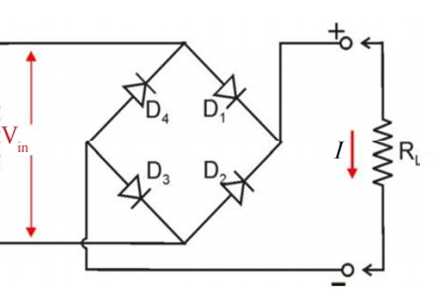
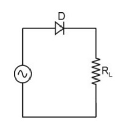

සෘජුකරණය සහ සුමටනය (Rectification & Smoothing)
දෝලනේක්ෂ (Oscilloscope) තරංග සටහන් සජීවීව නිරීක්ෂණය කරන්න
CH1: ආදාන ප්රත්යාවර්ත තරංගය (Input AC)
CH2: ප්රතිදාන සරල තරංගය (Output DC)
සෘජුකරණ වර්ගය තෝරන්න (Type):
අර්ධ තරංග සෘජුකරණය (Half-Wave)
පූර්ණ තරංග සෘජුකරණය (Full-Wave Bridge)
ධාරිත්රක සුමටනය (Add Smoothing Capacitor)
නවත්වන්න (Pause)
මුල සිට (Reset)

